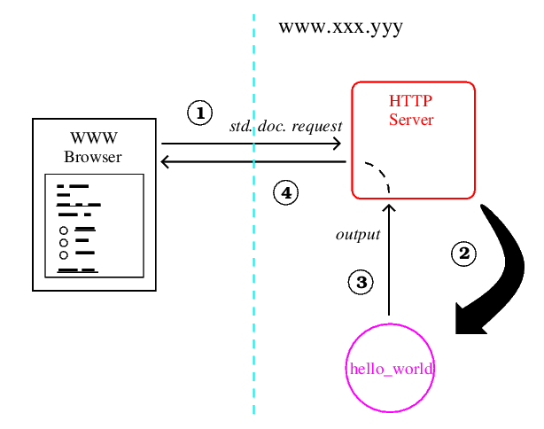
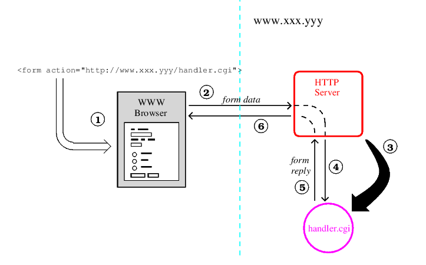
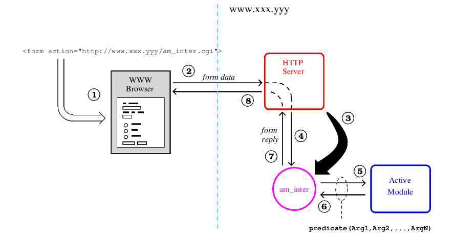
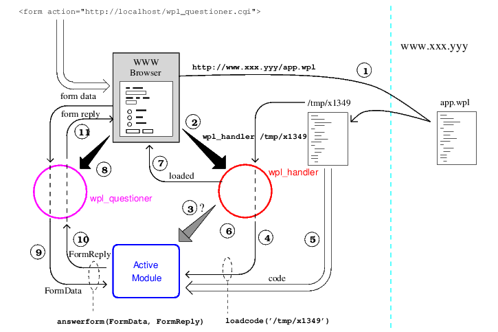

Created: 2023-05-03 mié 17:04
Tomcat
Python / django
Ruby / Ruby on Rails
MEAN / MongoDB, Express.js, Angular JS, Node.js

El Código mas simple podría ser:
main(_) :-
write('Content-type: text/html'), nl,nl,
write('<HTML>'),
write('Hello world.'),
write('</HTML>').
output_html(HTMLTerm)
Outputs 'HTMLTerm', interpreted as an 'htmlterm/1', to current output stream.
(True) Usage:
'HTMLTerm' is a term representing HTML code. (pillowtypes:htmlterm/1)
html2terms(String,Terms)
'String' is a character list containing HTML code and 'Terms' is its prolog structured representation.
Reversible
:- use_package(library(pillow)).
main(_) :-
T = [ cgi_reply,
html( [
'Hello',
b(world)
]),
output_html(T).

:- use_package(library(pillow)).
:- use_module(library(write)).
main(_):-
output_html([
cgi_reply,
start,
title('Telephone database'),
heading(2,'Telephone database'),
$,
start_form('http://localhost/~claudio/cgi-bin/phonedb3.pl'),
'Click here, enter name of clip member, and press Return:',
\\,
input(text,[name=person_name,size=20]),
end_form,
end]).

